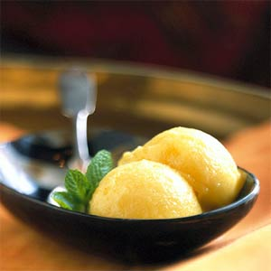
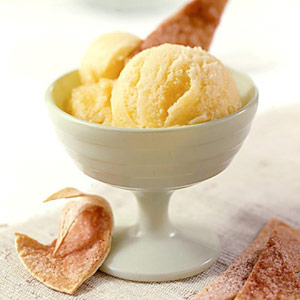
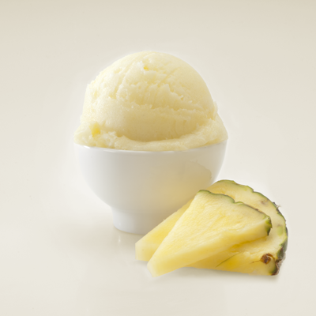
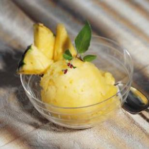

Pineapple sorbet
Pineapple sorbet, a specific kind of sorbet, flavoured like the wonderful tropical fruit pineapple usually comes in a light yellow colour. This delightful sorbet dessert is a great option to finish meals on warm summer evenings, or to refresh oneself during the daytime. On this page you can find several things:
History
A sorbet is a frozen dessert made from sweetened water with flavouring (typically fruit juice or fruit puree, wine, and/or liqueur, and very rarely honey). For the pineapple sorbet this flavouring is pineapple.
The word "sorbet" is derived from the Arab word "Sharbat" (fragrant mashed fruit drink). However, the root is present in such Indo-European languages as Greek and Persian for example. The English word "sherbet" entered English directly from the Turkish in the early 17th century.
Source
The pineapple (Ananas comosus) is a tropical plant with edible multiple fruit consisting of coalesced berries, also called pineapples, and the most economically significant plant in the Bromeliaceae family.
The plant is indigenous to South America and is said to originate from the area between southern Brazil and Paraguay; however, little is known about the origin of the domesticated pineapple. The natives of southern Brazil and Paraguay spread the pineapple throughout South America, and it eventually reached the Caribbean, Central America and Mexico. Columbus encountered the pineapple in 1493 on the leeward island of Guadeloupe and brought it back with him to Spain, thus making the pineapple the first bromeliad to be introduced by humans outside of the New World.
Charles II presented with the first pineapple grown in England (1675 painting by Hendrik Danckerts). The pineapple was brought to northern Europe by the Dutch from their colony in Surinam.
Source
Examples of Pineapple sorbet
Click the images to find the recipes for this delicious looking pineapple sorbets.
   Variations on the pineapple sorbet
These days people create culinary masterpieces based on the original simple pineapple sorbet. Think about:
- Pineapple coconut sorbet
- Pineapple slushy
- Boozy sorbet: Frozen Pineapple Mojito sorbet
Pineapple sorbet recipe
- Place pineapple and lemon juice in a food processor; process until smooth.
- Add sugar; process 1 minute or until sugar dissolves.
- Pour mixture into the freezer can of an ice-cream freezer; freeze according to manufacturer's instructions.
- Spoon sorbet into a freezer-safe container.
- Serve the sorbet while it's frozen.